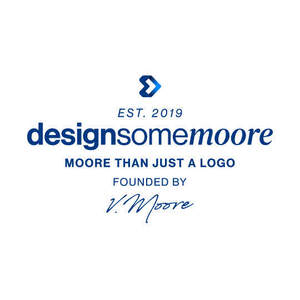

Trade Mark Journal No.2025/020 16 May 2025
UK00004197694 1 May 2025 (9,16,35,40,41,42)

- Class 9
- Downloadable graphic design templates; Graphic art software; Graphic equalisers; Graphic equalizers; Computer-aided design (CAD) software.
- Class 16
- Graphic drawings; Graphic prints; Graphic reproductions; Reproductions (Graphic -); Graphic art prints; Embroidery design patterns; Graphic art reproductions; Graphic representations; Graphic art books.
- Class 35
- Design of advertising logos; Advertising services to create corporate and brand identity; Advertising and marketing; Advertising and marketing consultancy; Brand creation services (advertising and promotion); Brand positioning; Marketing; Advertising services to create brand identity for others; Brand strategy services; Brand positioning services; Advertising copywriting; Influencer marketing; Advertising, marketing and promotional services; Advertising, promotional and marketing services; Marketing, advertising, and promotional services; Promotional marketing; Advertising and marketing services; Design of advertising brochures; Product marketing; Copywriting for advertising and promotional purposes; Business marketing consultancy; Advertising, marketing and promotion services; Marketing, advertising and promotion services; Design of advertising flyers; Marketing consultancy; Consultancy services relating to advertising, publicity and marketing; Promotion [advertising] of business; Developing promotional campaigns for business; Brand creation services; Marketing consulting; Business marketing services; Design of marketing surveys; Graphic advertising services; Digital marketing; Consultancy relating to the organisation of promotional campaigns for business; Distribution of advertising, marketing and promotional material; Organisation of customer loyalty programs for commercial, promotional or advertising purposes; Consultancy regarding advertising communications strategy; Promotional marketing services using audiovisual media; Consultancy relating to business advertising; Business marketing consulting services; Marketing services; Targeted marketing; Copywriting; Corporate identity services; Dissemination of advertising, marketing and publicity materials; Advertising, marketing and promotional consultancy, advisory and assistance services; Advertising; Design of advertising materials; Marketing agency services; Investigations of marketing strategy; Advertising and publicity; Publicity and advertising; Brand evaluation services; Advertising and publicity services; Consultancy relating to marketing; Advertising and promotional services; Promotional and advertising services; Promotional advertising services; Development of marketing concepts; Advertising services for the promotion of e-commerce; Business marketing consultation services; Customer loyalty services for commercial, promotional and/or advertising purposes; Business advertising services relating to franchising; Event marketing; Promotion, advertising and marketing of on-line websites; Product merchandising; Creative marketing plan development services; Development of advertising concepts; On-line advertising and marketing services; Consumer profiling for commercial or marketing purposes; Advertising and marketing services provided by means of social media; Brand testing; Consultancy regarding advertising communication strategies; Business consultancy services relating to the marketing of fund raising campaigns; Research services relating to advertising and marketing; Press advertising consultancy; Business merchandising display services; Developing promotional campaigns for businesses; Providing marketing consulting in the field of social media; Business advice relating to strategic marketing; Providing business marketing information; Referral marketing; Advertising and promotion services; Banner advertising; Marketing management advice; Promotional management for sports personalities; Leasing of advertising hoardings; Advice in the field of business management and marketing; Development of promotional campaigns; Planning of marketing strategies; Advertising, promotional and public relations services; Development of marketing strategies and concepts; Advertising planning; Trade marketing [other than selling]; Direct marketing consulting; Advertising and marketing services provided by means of blogging; Consultancy relating to advertising and promotion services; Professional consultancy relating to marketing; Affiliate marketing; Promotional advertising for exploration projects; Consultancy relating to demographics for marketing purposes; Corporate management consultancy; Advertising and marketing services provided via communications channels; Preparation of advertising campaigns; Providing advice in the field of business management and marketing; Business consultation relating to advertising; Marketing analysis; Business advice relating to marketing; Marketing (Business advice relating to -); Digital advertising services; Consultancy relating to advertising; Hire of advertising hoardings; Business strategy services; Customer club services, for commercial, promotional and/or advertising purposes; Advertising services for the promotion of beverages; Promotional management of celebrities; Business assistance relating to corporate identity; Recruitment advertising; Financial marketing.
- Class 40
- Customized printing of company names and logos for promotional and advertising purposes on the goods of others.
- Class 41
- Training courses in strategic planning relating to advertising, promotion, marketing and business; Training services relating to retail marketing.
- Class 42
- Graphic design; Graphic illustration design; Graphic art design; Graphic arts design; Design (Graphic arts -); Graphic illustration design services; Graphic design services; Industrial and graphic art design; Graphic designing; Graphic design of promotional materials; Design and graphic arts design for the creation of web sites; Computer aided graphic design; Visual design; Design of artwork; Design of graphic software systems; Graphic arts designing; Designing (Graphic arts -); Computer-aided design of video graphics; Services of a graphic designer; Design and graphic arts design for the creation of web pages on the Internet; Design of typefaces; Architectural design; Illustration services (design); Interior design; Computer graphic design for video projection mapping; Brochure design; Engineering design; Design of stationery; Fashion design; Packaging design; Design of packaging; Computer design; Design of ornamental layouts; Technical design; Design of software; Software design; Industrial art design; Website design; Computer graphics design services; Logo design services; Industrial design; Design (Industrial -); Product design; Computer-aided industrial design; Design of clothing; Styling [industrial design]; Architectural design for interior decoration; Graphic art services; Illustrating services (design); Commercial art design; Design of interior decoration; Art work design; Preparation of reports relating to graphic arts design; Hardware design; Construction design; Commercial interior design; Pattern design; Design services for art-work; Design of audio-visual creative works; Design of furnishings; Design of websites; Design consultancy; Platforms for graphic design as software as a service [SaaS]; Computer website design; Design of logos for t-shirts; Jewelry design; Design of furniture; Furniture design; Computer-aided engineering design and drawing services; Interior design services; Website design and development; Design of costumes; Automotive design; Tool design; Computer specification design; Design of sculptures; Animation design for others; Design of prototypes; Design of games; Architectural design services; Design of interior decor; Decor (Design of interior -); Interior decor design; Architectural design for exterior decoration; Interior decorating design; Design of printed material; Landscape lighting design; Urban design; Design, drawing and commissioned writing of computer software; Design of tools; Preparation of architectural design; Design of jewellery; Website design consultancy; Engineering design and consultancy; Shop interior design; Analysis of product design; Design of engineering products; Textile design services; Computer site design; Design of signs; Design of products; Software as a service [SaaS] featuring software platforms for graphic design; Design of models; Design services for architecture; Architecture design services; Design planning; Design of graphics and of livery for corporate identity; Dress design; Design and development of multimedia products; Computer-aided engineering design services; Design of computers; Design services relating to window graphics; Software design and development; Graphic design for the compilation of web pages on the internet; Design and development of computer hardware architecture; Design of headgear; Computer design research; Design services (Packaging -); Design services for packaging; Packaging design services; Design and development of computer software architecture; Graphic illustration services for others; Product design and development; Toy design; Theatrical lighting design; Hat design; Design of logos for corporate identity; Brand design services; Design of brand names; Consultancy relating to the design of packaging; Designing websites for advertising purposes; Product design services; Consumer product design; Fashion design consulting services; Business card design; Business card design services.
Design Some Moore